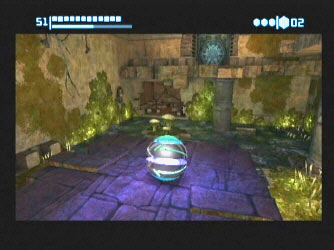
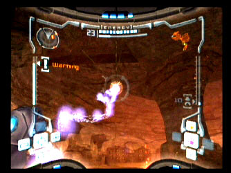

Metroid Prime continued...:
The graphics from here-on in are jaw dropping. After more exploring you eventually find yourself at Chozo Ruins. This beautifully structured piece of scenery is a cross between Tomb Raider, and Tatooine from Star Wars which  gives an Aztec ruins feel to the environment.
A little more exploring and you begin to realize that this building was once a great temple or city, which now lay in ruins, its walls strewn with strange language and after some scanning by Samus, some secrets become apparent. Most areas within this level have enemies which need clearing up. The most common are the scarabs which burst through the ground. Missile launcher upgrades are also available to high exploration gamers. Clumsy footwork may disturb a hive of Ram War Wasps - nasty little blighters which have acid stings. If shot close to the head, the guts spray all over Samus' visor. 
Without an upgrade of the map, the world can seem like a bit of a maze, but after some searching, a large room means that a map is downloaded and even more exploring can take place. From here it is also clear that other upgrade of Samus' suit are needed to continue the game, and the only way of doing this is to explore even more.
A cleverly aimed shot will release a giant flame throwing machine and more wasps to defeat. After this battle, the game moves on to Magmoor Mines, complete with fire breathing monsters and the all important puzzle factor.
After some more interaction with little beasties from Magmoor Mines, you eventually find yourself in the next area - Phendrana Drifts. This is another piece of Metroid Prime eye candy. You see, this part of the game involves exploring icy worlds, in constant snowy weather.